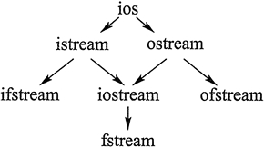

C++文件类（文件流类）及用法详解
《C++输入输出流》一章中讲过，重定向后的 cin 和 cout 可分别用于读取文件中的数据和向文件中写入数据。除此之外，C++ 标准库中还专门提供了 3 个类用于实现文件操作，它们统称为文件流类，这 3 个类分别为：
可以看到，ifstream 类和 fstream 类是从 istream 类派生而来的，因此 ifstream 类拥有 istream 类的全部成员方法。同样地，ofstream 和 fstream 类也拥有 ostream 类的全部成员方法。这也就意味着，istream 和 ostream 类提供的供 cin 和 cout 调用的成员方法，也同样适用于文件流。并且这 3 个类中有些成员方法是相同的，比如 operator <<()、operator >>()、peek()、ignore()、getline()、get() 等。
值得一提的是，和 <iostream> 头文件中定义有 ostream 和 istream 类的对象 cin 和 cout 不同，<fstream> 头文件中并没有定义可直接使用的 fstream、ifstream 和 ofstream 类对象。因此，如果我们想使用该类操作文件，需要自己创建相应类的对象。
- ifstream：专用于从文件中读取数据；
- ofstream：专用于向文件中写入数据；
- fstream：既可用于从文件中读取数据，又可用于向文件中写入数据。
这 3 个文件流类的继承关系，如图 1 所示。值得一提的是，这 3 个文件流类都位于 <fstream> 头文件中，因此在使用它们之前，程序中应先引入此头文件。

图1：C++类库中的流类
图1：C++类库中的流类
可以看到，ifstream 类和 fstream 类是从 istream 类派生而来的，因此 ifstream 类拥有 istream 类的全部成员方法。同样地，ofstream 和 fstream 类也拥有 ostream 类的全部成员方法。这也就意味着，istream 和 ostream 类提供的供 cin 和 cout 调用的成员方法，也同样适用于文件流。并且这 3 个类中有些成员方法是相同的，比如 operator <<()、operator >>()、peek()、ignore()、getline()、get() 等。
值得一提的是，和 <iostream> 头文件中定义有 ostream 和 istream 类的对象 cin 和 cout 不同，<fstream> 头文件中并没有定义可直接使用的 fstream、ifstream 和 ofstream 类对象。因此，如果我们想使用该类操作文件，需要自己创建相应类的对象。
fstream 类拥有 ifstream 和 ofstream 类中所有的成员方法，表 2 罗列了 fstream 类一些常用的成员方法。为什么 C++ 标准库不提供现成的类似 fin 或者 fout 的对象呢？其实很简单，文件输入流和输出流的输入输出设备是硬盘中的文件，硬盘上有很多文件，到底应该使用哪一个呢？所以，C++ 标准库就把创建文件流对象的任务交给用户了。
| 成员方法名 | 适用类对象 | 功 能 |
|---|---|---|
| open() |
fstream ifstream ofstream |
打开指定文件，使其与文件流对象相关联。 |
| is_open() | 检查指定文件是否已打开。 | |
| close() | 关闭文件，切断和文件流对象的关联。 | |
| swap() | 交换 2 个文件流对象。 | |
| operator>> |
fstream ifstream |
重载 >> 运算符，用于从指定文件中读取数据。 |
| gcount() | 返回上次从文件流提取出的字符个数。该函数常和 get()、getline()、ignore()、peek()、read()、readsome()、putback() 和 unget() 联用。 | |
| get() | 从文件流中读取一个字符，同时该字符会从输入流中消失。 | |
| getline(str,n,ch) | 从文件流中接收 n-1 个字符给 str 变量，当遇到指定 ch 字符时会停止读取，默认情况下 ch 为 '\0'。 | |
| ignore(n,ch) | 从文件流中逐个提取字符，但提取出的字符被忽略，不被使用，直至提取出 n 个字符，或者当前读取的字符为 ch。 | |
| peek() | 返回文件流中的第一个字符，但并不是提取该字符。 | |
| putback(c) | 将字符 c 置入文件流（缓冲区）。 | |
| operator<< |
fstream ofstream |
重载 << 运算符，用于向文件中写入指定数据。 |
| put() | 向指定文件流中写入单个字符。 | |
| write() | 向指定文件中写入字符串。 | |
| tellp() | 用于获取当前文件输出流指针的位置。 | |
| seekp() | 设置输出文件输出流指针的位置。 | |
| flush() | 刷新文件输出流缓冲区。 | |
| good() |
fstream ofstream ifstream |
操作成功，没有发生任何错误。 |
| eof() | 到达输入末尾或文件尾。 |
这里就以 fstream 类举例，简单演示一下如何使用表 2 中的一些成员方法操作文件：表 2 中仅列举的了部分常用的成员方法，更详细的介绍，读者可查看 C++标准库手册。
#include <iostream>
#include <fstream>
using namespace std;
int main() {
const char *url ="http://c.biancheng.net/cplus/";
//创建一个 fstream 类对象
fstream fs;
//将 test.txt 文件和 fs 文件流关联
fs.open("test.txt", ios::out);
//向test.txt文件中写入 url 字符串
fs.write(url, 30);
fs.close();
return 0;
}
执行程序，该程序同目录下会生成一个 test.txt 文件，该文件的内容为：
http://c.biancheng.net/cplus/
值得一提的是，无论是读取文件中的数据，还是向文件中写入数据，最先要做的就是调用 open() 成员方法打开文件。同时在操作文件结束后，还必须要调用 close() 成员方法关闭文件。关于如何使用 open() 函数打开一个文件，下一节会做详细介绍。注意，初学者只需借助注释看懂程序执行流程即可，具体的代码实现不必深究，后续章节会做详细讲解。
关注公众号「站长严长生」，在手机上阅读所有教程，随时随地都能学习。内含一款搜索神器，免费下载全网书籍和视频。

微信扫码关注公众号